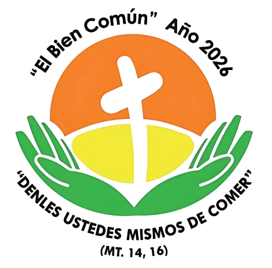

C A P I L L A
San Francisco de Asís
PROGRAMA DE FESTEJOS PATRONALES 2026

"El Bien Común" - Año 2026
"Denles ustedes mismos de comer" (Mt 14, 16)
PROGRAMA DEL 24 SEPTIEMBRE AL 4 OCTUBRE
Novenario
Nueve días de preparación espiritual, cada uno con un tema del Bien Común.
1º
Jueves 24 de Septiembre
Promover el Bien Común para una Vida Digna

Invitados
Capilla Virgen del Rosario, Capilla Niño Jesús, Capilla Virgen de Fátima, Oratorio San Francisco, Jóvenes y Padres de la Catequesis de Confirmación 2° año.
Comercios y/o empresas
Despensa 3 Hermanos, Despensa y Lomitería 10 de Enero, Librería de todo un poco, Bodega Rolo, Lomitería Jessi.
2º
Viernes 25 de Septiembre
Impulsar una Educación Integral

Invitados
Capilla San Juan, Capilla Cristo Rey, Capilla Divina Misericordia, Jóvenes y Padres de Catequesis de Cavevi 1 y 2.
Comercios y/o empresas
Decoraciones Lulu, Carpintería San Miguel, Confecciones Ña Gladys, Tobi Comercial.
3º
Sábado 26 de Septiembre
Garantizar Techo, Tierra y Trabajo

Invitados
Capilla San Blás, Capilla María Auxiliadora, Capilla Virgen del Rosario Villa Elisa, Movimiento Familiar Cristiano, Jóvenes y Padres de Catequesis de Confirmación 1er año.
4º
Domingo 27 de Septiembre
Construir la Fraternidad


Invitados
Oratorio María Auxiliadora, Movimiento Divina Misericordia, Hombres Valientes del Santo Rosario, Centro Ambulatorio S.A.P, Niños y Padres de Catequesis de Comunión.
Comercios y/o empresas
Confecciones Ña Ramona, Herrería Rosa Mística, Ferretería B y R.
5º
Lunes 28 de Septiembre
Cuidar la Casa Común

Invitados
Capilla Antigua Imagen, Capilla San Roque, Legión de María, Liturgia Parroquial, Niños y Padres de Catequesis de Reconciliación.
Comercios y/o empresas
Taller Moto Par, Taller Silva, Comisión Unión Paraguaya, Bar Par.
6º
Martes 29 de Septiembre
Asegurar una Salud Integral

Invitados
Celebrantes de la Palabra Parroquial, Ministros de la Comunión, Jóvenes y padres de Catequesis de Cavevi 3 y 4.
Comercios y/o empresas
Confitería Ña Blanqui.
7º
Miércoles 30 de Septiembre
Practicar la Justicia

Invitados
Capilla Virgen de la Merced, Capilla San Jorge, Capilla Medalla Milagrosa, Hnas. del Cenáculo de la Caridad, Renovación Carismática Cristiana Juvenil, Mitaí Roga, Escuela Virgen del Carmen, Grupo de Apoyo las Divinas.
8º
Jueves 01 de Octubre
Comprometerse en la Vida Comunitaria

Invitados
Capilla Virgen de Schoenstatt, Capilla Divino Niño Jesús, Acción Católica, Pastoral de Juventud, Escuela San Miguel.
Comercios y/o empresas
Alquileres Fabi y Carol.
9º
Viernes 02 de Octubre
Fomentar una Economía Humanista y Solidaria

Invitados
Capilla San Agustín, Capilla San Miguel Arcángel, Capilla San Sebastián, Adoradores del Santísimo.
VÍSPERA DE LA FIESTA
Solemnes Vísperas
Brindar una Protección Social Efectiva para Todos

Invitados
Capilla Virgen de la Candelaria V.E, Capilla Virgen de la Merced V.E., Capilla San Blás V.E, Oratorio Virgen de Caacupé, Hnas. Miguelitas, Niños y Padres de Catequesis de Iniciación, Benefactores, Fundadores y Formadores de la Capilla, Consejo Pastoral y Económico de la Capilla.
FIESTA PATRONAL
Día Triunfal de San Francisco de Asís

Invitados
Orden Franciscana Seglar, Hnas. del San José. Toda la Comunidad.
PROGRAMACIÓN ESPECIAL
Actividades
Momentos festivos y comunitarios durante las fiestas patronales.
Sábado 26 de Septiembre
Domingo 27 de Septiembre
Sábado 03 de Octubre
Domingo 04 de Octubre
DEVOCIÓN
Para orar antes de la fiesta
Oración ante el Crucifijo de San Damián
¡Oh alto y glorioso Dios!, ilumina las tinieblas de mi corazón y dame fe recta, esperanza cierta, caridad perfecta, sentido y conocimiento, Señor, para que cumpla tu santo y veraz mandamiento.
Amén.